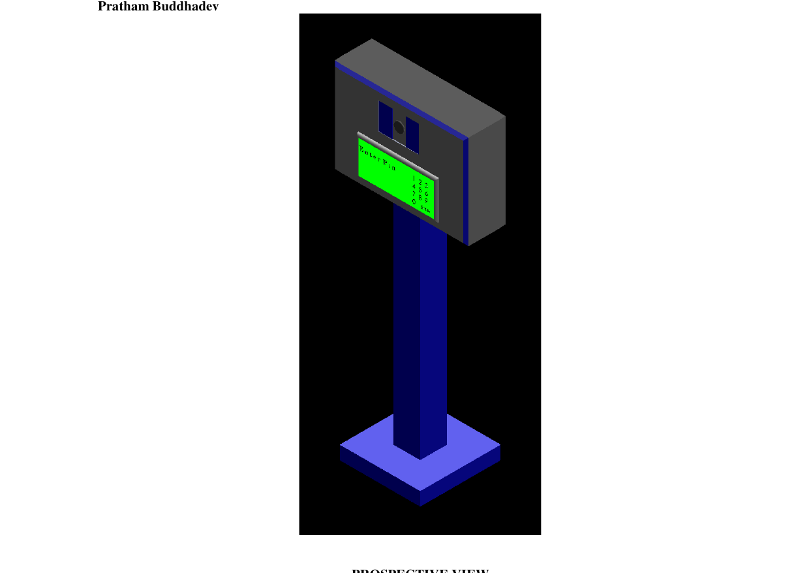

This design patent grew out of a design-thinking exercise on improving security at a university tech park. Working with Janak Pariya, Pushti Depani, and Hetvi Sojitra, we mapped the space using the AEIOU framework (Activities, Environment, Interactions, Objects, Users) and identified confidential-area security as a key problem worth solving.
Running that problem through the SCAMPER method surfaced a concrete direction: combine card-based entry with biometric verification — fingerprint and face recognition — to close the gaps that come with ID cards alone. That idea was carried forward into a physical product design with Dr. Arjav Bavarva, Pushti Depani, and myself, resulting in a registered design patent for a standalone Biometric Scanner unit — its PIN pad, display, and enclosure shape protected under India's Designs Act, 2000.
The design was officially registered by the Indian Patent Office on 5 January 2023 under Design No. 376872-001, Class 10-05, with the certificate of registration issued on 2 March 2023.
